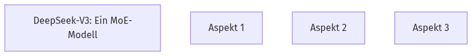
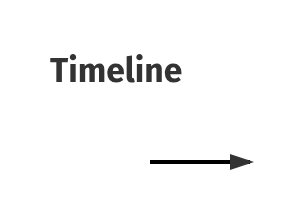
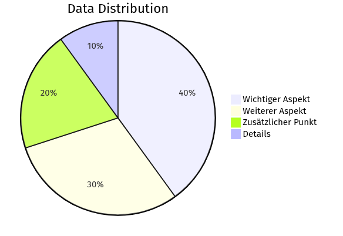

DeepSeek-V3: Ein MoE-Modell
Hast du schon von den neuesten KI-Modellen gehört? 🤔DeepSeek-V3 ist ein riesiges "Mixture-of-Experts" (MoE) Sprachmodell mit 671 Milliarden Parametern. Für jede Anfrage werden aber nur 37 Milliarden Parameter aktiv genutzt.
Stell dir ein Team von 671 Experten vor, aber nur 37 davon arbeiten gleichzeitig an deiner Aufgabe – das spart Ressourcen!
MoE-Architektur: DeepSeek-V3

Klicke auf die Experten-Knoten, um zu sehen, wie nur ein Teil davon für eine Anfrage aktiviert wird.
Effiziente Architektur: MLA & DeepSeekMoE
Wie erreicht DeepSeek-V3 seine beeindruckende Effizienz? 🚀Es nutzt Multi-head Latent Attention (MLA) für schnelle Inferenz und DeepSeekMoE für kostengünstiges Training. Diese Architekturen wurden schon in DeepSeek-V2 erfolgreich eingesetzt.
Stell dir MLA als einen "Turbo" für die Denkgeschwindigkeit vor und DeepSeekMoE als ein "Smart-Budget-System" fürs Lernen.
Welche Vorteile siehst du in der Wiederverwendung bewährter Architekturen?
🧠
Quick Check
Wofür wird MLA in DeepSeek-V3 hauptsächlich genutzt?
Multi-head Latent Attention (MLA) ist speziell für eine effiziente Inferenz in DeepSeek-V3 optimiert.
Innovative Trainingsstrategien
Wie macht DeepSeek-V3 sein Training noch besser? ✨DeepSeek-V3 nutzt eine neuartige, hilfsverlustfreie Strategie für Lastverteilung, die Performance-Einbußen minimiert. Zudem kommt ein Multi-Token Prediction (MTP) Trainingsziel zum Einsatz, das die Gesamtleistung verbessert.
Stell dir vor, Lastverteilung ist wie ein Dirigent, der das Orchester ohne Zusatznoten perfekt synchronisiert, und MTP ist wie ein Blick in die Zukunft, der das Modell vorausschauender macht.
🧠
Quick Check
Was ist ein Vorteil der hilfsverlustfreien Lastverteilung?
Die hilfsverlustfreie Strategie minimiert negative Auswirkungen auf die Modellleistung, die sonst durch Lastverteilung entstehen könnten.
Wissens-Check! 🧠
Welche der folgenden Aussagen beschreibt den primären Vorteil der Multi-Token Prediction (MTP) Trainingsstrategie im Vergleich zur hilfsverlustfreien Lastverteilung bei DeepSeek-V3? ✨
FP8 Mixed Precision Training
Möchtest du wissen, wie DeepSeek-V3 so schnell trainiert wird? ⚡DeepSeek-V3 nutzt FP8 Mixed Precision Training. Das bedeutet, es verwendet Gleitkommazahlen mit geringerer Genauigkeit (8-Bit) für Berechnungen, was das Training beschleunigt und den GPU-Speicherbedarf reduziert.
Stell dir vor, du rechnest nicht mehr mit 10 Nachkommastellen, sondern nur mit 2 – das geht viel schneller, ohne dass das Endergebnis stark leidet!
🧠
Quick Check
Was ist ein Vorteil von FP8 Mixed Precision Training?
FP8 Mixed Precision Training reduziert den benötigten GPU-Speicher, indem es Gleitkommazahlen mit geringerer Genauigkeit verwendet.
FP8 Training: Geschwindigkeit & Speicher

Ziehe den Slider, um den Unterschied zwischen FP32 und FP8 Präzision in Bezug auf Geschwindigkeit und Speicherverbrauch zu visualisieren.
DualPipe & Kommunikationsoptimierung
Wie überwindet DeepSeek-V3 Kommunikationsengpässe beim Training? 🌐Es nutzt den DualPipe-Algorithmus für effiziente Pipeline-Parallelisierung, der "Bubbles" reduziert und Kommunikation durch Überlappung mit Berechnungen versteckt. Dazu kommen optimierte Cross-Node-Kommunikations-Kernels.
Stell dir DualPipe als eine optimierte Autobahn vor, auf der Daten und Berechnungen gleichzeitig fließen, ohne Stau.
🧠
Quick Check
Was ist das Ziel des DualPipe-Algorithmus?
Der DualPipe-Algorithmus versteckt Kommunikationszeiten durch Überlappung mit Berechnungen, um die Effizienz zu steigern.
DualPipe: Effiziente Parallelisierung
Beobachte die animierten Datenpakete, die durch die DualPipe-Struktur fließen, um die Überlappung von Kommunikation und Berechnung zu verstehen.
DeepSeek-V3 Pre-Training
Wie wird DeepSeek-V3 "vorgebildet"? 📚DeepSeek-V3 wurde auf 14.8 Billionen hochwertigen und vielfältigen Tokens vortrainiert. Der Prozess war extrem stabil, ohne Rückschläge. Danach wurde die Kontextlänge schrittweise von 32K auf 128K erweitert.
Stell dir vor, das Modell liest eine Bibliothek von 14.8 Billionen Büchern und merkt sich dabei, wie die Sätze aufgebaut sind und welche Wörter zusammenpassen.
🧠
Quick Check
Wie viele Tokens wurden für das Pre-Training verwendet?
DeepSeek-V3 wurde auf beeindruckenden 14.8 Billionen hochwertigen Tokens vortrainiert.
Post-Training & Wissensdestillation
Wie lernt DeepSeek-V3 menschliche Vorlieben? 🧠Nach dem Pre-Training durchläuft DeepSeek-V3 ein Post-Training mit Supervised Fine-Tuning (SFT) und Reinforcement Learning (RL). Dabei wird auch Denkfähigkeit von DeepSeek-R1-Modellen destilliert, um die Genauigkeit zu verbessern.
Stell dir vor, SFT ist wie ein Lehrer, der dem Modell gute Manieren beibringt, und RL ist wie ein Coach, der es durch Belohnungen optimiert.
🧠
Quick Check
Was ist das Ziel der Wissensdestillation?
Wissensdestillation überträgt Denkfähigkeiten von einem leistungsstärkeren Modell, um die Genauigkeit zu verbessern.
Wissens-Check! 🧠
Was ist der Hauptunterschied in den Zielen zwischen dem Pre-Training und dem Post-Training (SFT/RL) von DeepSeek-V3? 📚🧠
Benchmark-Ergebnisse & Leistung
Wie gut schneidet DeepSeek-V3 im Vergleich ab? 🏆DeepSeek-V3-Base ist das stärkste verfügbare Open-Source-Basismodell, besonders in Code und Mathematik. Die Chat-Version ist vergleichbar mit Top-Modellen wie GPT-4o und Claude-3.5-Sonnet.
Stell dir vor, DeepSeek-V3 gewinnt Goldmedaillen in den Disziplinen Programmieren und Rechnen bei den KI-Olympiaden!
DeepSeek-V3 Benchmark-Leistung

Vergleiche die Balken der verschiedenen Modelle in den Kategorien Code und Mathematik, um die Stärke von DeepSeek-V3 zu erkennen.
Kosteneffizienz von DeepSeek-V3
Wie viel kostet es, ein Top-KI-Modell wie DeepSeek-V3 zu trainieren? 💰DeepSeek-V3 wurde für nur 2.788 Millionen H800 GPU-Stunden vollständig trainiert, was etwa 5.576 Millionen US-Dollar entspricht. Das Vortraining allein kostet 180K H800 GPU-Stunden pro Billion Tokens.
Das ist, als würde man einen Supersportwagen bauen, der die Leistung eines Formel-1-Wagens hat, aber nur einen Bruchteil der üblichen Kosten verursacht.
Wissens-Check! 🧠
Was ist der Hauptunterschied in der Leistungsbeschreibung zwischen DeepSeek-V3-Base und DeepSeek-V3-Chat, wie er in den Micro-Lerneinheiten dargestellt wird? 🤔
Visual Title Here
Visual description and instructions here...